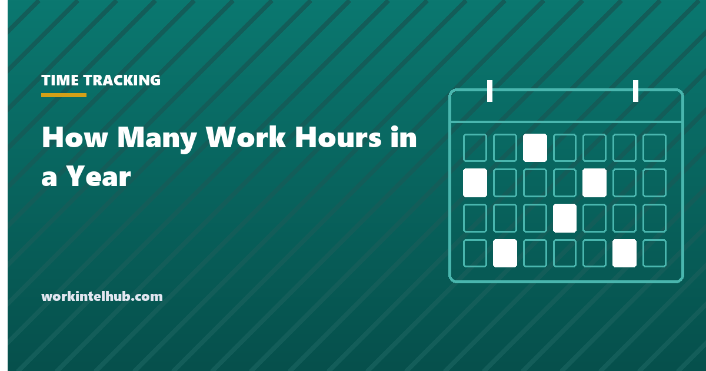

How Many Work Hours in a Year

The standard answer is 2,080: 40 hours a week times 52 weeks. It is the number payroll uses to convert a salary to an hourly rate and the number most benefit and overtime calculations assume, and it is wrong for every actual year. A calendar year has 260, 261 or 262 weekdays depending on where 1 January falls, eleven federal holidays remove about ten of them, and paid time off removes more. Someone on a 40-hour schedule with three weeks of leave works roughly 1,850 hours, not 2,080, and a salary divided by the honest figure gives a materially higher hourly rate.
The calculator gives the figures for any year, schedule and leave allowance, and flags the years with 27 bi-weekly pay periods. The rest of the page explains the 2,080 convention, gives the 2026 and 2027 numbers, covers pay periods and the federal holidays, and shows which figure to use for which purpose.
Work hours in a year calculator
Federal holidays are counted on their observed weekday (a Saturday holiday moves to Friday, a Sunday holiday to Monday). Bi-weekly and weekly years occasionally have 27 or 53 pay periods; the calculator flags the years in which that can happen.
Why 2,080, and when to use it
The 2,080-hour year is a convention, not a count. It assumes 52 weeks of 40 hours with no holidays and no leave, and its virtue is that it is the same every year, which is what a payroll system needs. A $62,400 salary is $30.00 an hour at 2,080 hours in 2026 and in 2027 alike. Federal agencies use 2,087 for their own pay computations, a figure the Office of Personnel Management derives by averaging the 28-year calendar cycle, which is why federal hourly rates never quite match the private-sector formula.
Use 2,080 for converting a salary to an hourly rate, for comparing an hourly offer to a salaried one, and for anything a payroll system will also calculate. Use the actual count, from the calculator, for budgeting labour hours, for capacity planning, and for working out what an hour of someone's time really costs once holidays and leave are paid but not worked. The salary to hourly calculator uses the convention; the employee cost calculator uses the actual figure.
2026 and 2027: the actual numbers
| 2026 | 2027 | |
|---|---|---|
| Days in the year | 365 | 365 |
| Weekdays (Monday to Friday) | 261 | 261 |
| Federal holidays falling on weekdays | 11 | 10 (Independence Day is a Sunday, observed Monday 5 July; Christmas is a Saturday, observed Friday 24 December) |
| Working days after federal holidays | 250 | 251 |
| Nominal hours at 8 per weekday | 2,088 | 2,088 |
| Hours worked after holidays, 15 days PTO and 3 sick days | 1,856 | 1,864 |
| Fridays | 52 | 53 |
| Bi-weekly pay periods | 26 | 26, or 27 for schedules whose first payday is Friday 1 January |
The holiday count in the table uses the observed dates: when a federal holiday falls on a Saturday it is observed on the Friday, on a Sunday on the Monday, and the calculator applies the same rule. Private employers are not required to observe federal holidays at all, and the federal holidays 2027 page lists the dates and the pay rules, while working days in 2027 has the month-by-month breakdown.
Pay periods in a year
Weekly pay gives 52 periods, semi-monthly 24, monthly 12, and bi-weekly 26. The exception is the year with 53 of the payday weekday. 2027 begins on a Friday and therefore has 53 Fridays; an employer paying bi-weekly on Fridays whose cycle lands on 1 January 2027 will pay 27 times that year, and one paying weekly on Fridays will pay 53. Employers whose cycle lands on 8 January get the usual 26.
The extra period is a cash-flow and communication question for salaried staff: dividing an annual salary into 27 rather than 26 instalments makes each check smaller, while paying the usual 26 amount 27 times costs the employer about 3.8 per cent more that year. Most employers choose the second and say so in advance; the pay periods guide works through the options.
Hours per pay period follow from the schedule: 80 for bi-weekly at 40 hours, 86.67 for semi-monthly (2,080 ÷ 24), 173.33 for monthly. Overtime, however, is calculated by workweek regardless of the pay period, which the overtime calculator handles.
Which number for which purpose
| Purpose | Use | Why |
|---|---|---|
| Salary to hourly conversion | 2,080 | Payroll convention; consistent across years |
| Federal pay computations | 2,087 | OPM's 28-year average |
| Labour hour budgets and capacity plans | Actual working days × hours, minus expected leave | Plans built on 2,080 overcommit by 10 to 12 per cent |
| True hourly cost of an employee | Total cost ÷ hours actually worked | Holidays and leave are paid but produce nothing |
| Full-time equivalent (FTE) counts | 2,080 (or the employer's standard year) | ACA uses 130 hours a month for full-time status |
| Contractor rate comparison | Actual billable hours, often 1,500 to 1,800 | Contractors are not paid for holidays, leave or admin time |
The Bureau of Labor Statistics reports average weekly hours for all private employees at around 34, well under 40, because the figure includes part-time workers; the full-time average sits above 40 for many occupations. Neither is the right number for an individual schedule, which is what the calculator is for.
Key takeaways
- The standard year is 2,080 hours (40 × 52); federal pay uses 2,087. Both are conventions that ignore holidays and leave.
- 2026 has 261 weekdays and 250 working days after federal holidays; 2027 has 261 and 251. At 8 hours that is about 2,000 nominal hours and roughly 1,860 actually worked with typical leave.
- Use 2,080 for salary conversion and FTE counts; use the actual count for budgets, capacity plans and true hourly cost.
- 2027 has 53 Fridays, so Friday-paid schedules anchored to 1 January have 27 bi-weekly or 53 weekly pay periods.
- Federal holidays are observed on the nearest weekday when they fall at the weekend; private employers need not observe them.
- Overtime is calculated by workweek whatever the pay period.
Frequently asked questions
How many work hours are in a year?
The standard figure is 2,080, which is 40 hours a week for 52 weeks. An actual year has 260 to 262 weekdays, so 2,080 to 2,096 hours at 8 a day before holidays, and around 2,000 after the federal holidays. A full-time employee with three weeks of leave works roughly 1,850 to 1,880 hours.
How many working days are there in 2027?
261 weekdays. Ten federal holidays fall on weekdays once observed dates are applied (Independence Day is observed on Monday 5 July and Christmas on Friday 24 December), leaving 251 working days for employers that observe all of them.
Why do payroll systems use 2,080 hours?
Because it is the same every year. Converting a salary to an hourly rate at 2,080 gives a stable figure for overtime, benefit calculations and offer comparisons. Federal agencies use 2,087, the average over the 28-year calendar cycle.
How many pay periods are in a year?
Weekly 52, bi-weekly 26, semi-monthly 24, monthly 12. In a year with 53 of the payday weekday, weekly and bi-weekly schedules anchored to the first such day get 53 or 27. 2027 has 53 Fridays, so bi-weekly Friday schedules starting 1 January 2027 have 27 periods.
How many hours is full-time?
The Fair Labor Standards Act does not define full-time. The Affordable Care Act treats 30 hours a week or 130 a month as full-time for coverage purposes, and most employers set full-time at 35 to 40 hours in policy. Overtime is owed above 40 hours in a workweek regardless of the label.
How many hours does the average American work per year?
Bureau of Labor Statistics data puts average weekly hours for all private employees near 34, because the figure includes part-time workers, which is around 1,770 hours a year. Full-time workers average above 40 hours in many occupations, or roughly 2,000 hours after holidays and leave.